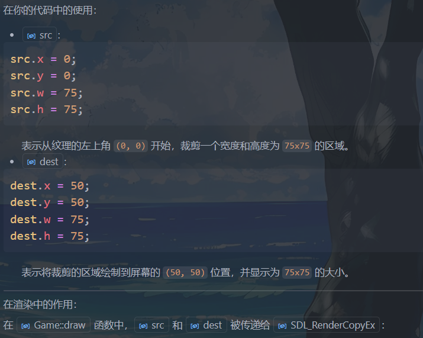
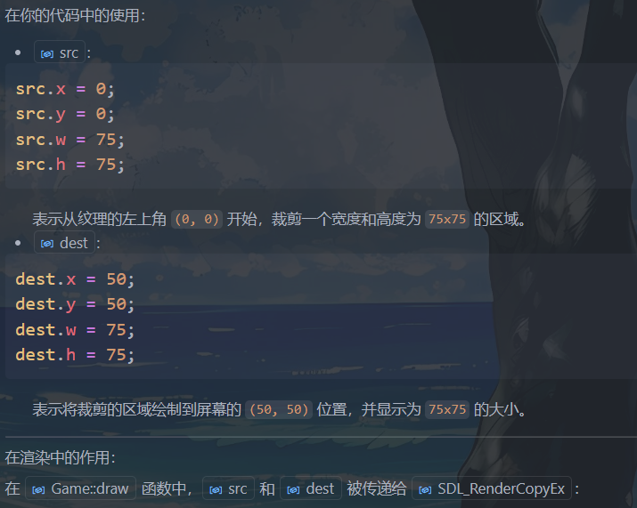
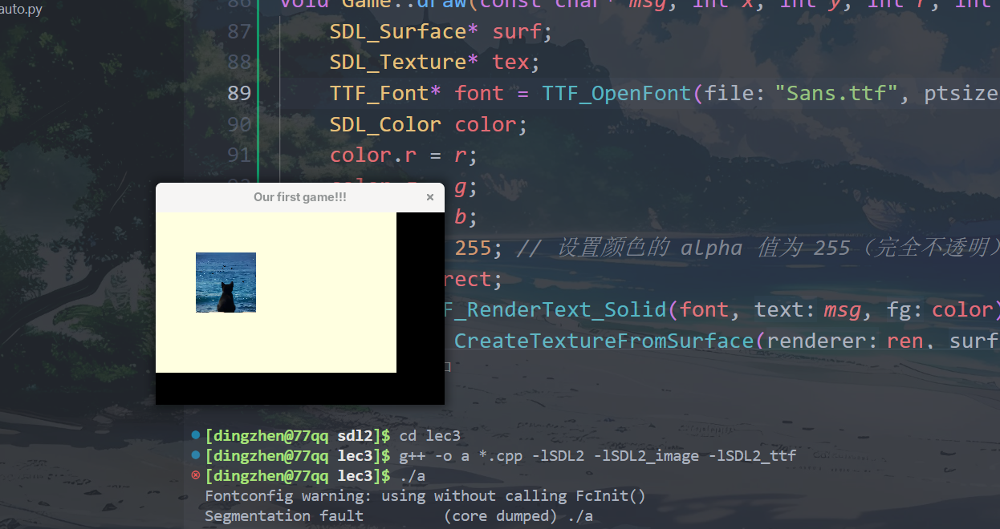
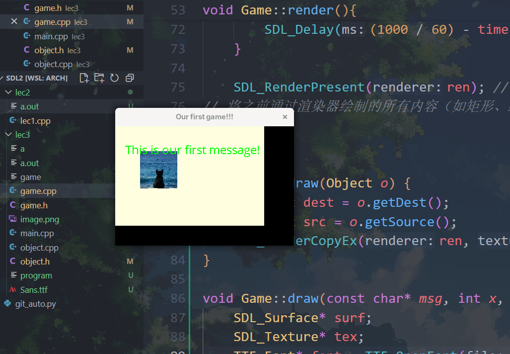

sdl2 learning
C++ SDL2 Window Tutorial
编译命令：
| g++ -o a *.cpp -lSDL2 -lSDL2_image -lSDL2_ttf
|
lec2: FPS, Keyboard, Fullscreen
| #include <SDL2/SDL.h>
#include <iostream>
#define WIDTH 1280
#define HEIGHT 720
bool running, fullscreen;
SDL_Renderer* renderer;
SDL_Window* window;
int frameCount, timerFPS, lastFrame, fps;
void update() {
if (fullscreen) SDL_SetWindowFullscreen(window, SDL_WINDOW_FULLSCREEN);
if (!fullscreen) SDL_SetWindowFullscreen(window, 0);
}
void input() {
SDL_Event e;
while (SDL_PollEvent(&e)) {
if (e.type == SDL_QUIT) running = false;
}
const Uint8* keystates = SDL_GetKeyboardState(NULL);
if (keystates[SDL_SCANCODE_ESCAPE]) running = false;
if (keystates[SDL_SCANCODE_F11]) fullscreen =!fullscreen;
}
void draw() {
SDL_SetRenderDrawColor(renderer, 40, 43, 200, 255);
/*
作用: 设置渲染器的绘制颜色。
参数 (40, 43, 200, 255) 分别表示 红色 (R)、绿色 (G)、蓝色 (B) 和 透明度 (A)。
这里设置的颜色是一个蓝色调（RGB 值为 40, 43, 200），完全不透明（A = 255）。
*/
SDL_Rect rect;
rect.x = rect.y = 0; // 矩形的左上角坐标为 (0, 0)，即窗口的左上角。
rect.w = WIDTH;
rect.h = HEIGHT;
SDL_RenderFillRect(renderer, &rect);
frameCount++;
int timerFPS = SDL_GetTicks() - lastFrame;
if (timerFPS < (1000 / 60)) {
SDL_Delay((1000 / 60) - timerFPS);
}
SDL_RenderPresent(renderer);
}
int main() {
running = 1;
fullscreen = 0;
static int lastTime = 0;
if (SDL_Init(SDL_INIT_EVERYTHING) < 0)
//参数: SDL_INIT_EVERYTHING:这是一个宏，表示初始化 SDL 的所有子系统（如视频、音频、计时器等）。
std::cout << "Failed at SDL_Init()" << std::endl;
if (SDL_CreateWindowAndRenderer(WIDTH, HEIGHT, 0, &window, &renderer) < 0) //指向 SDL_Window* 的指针，用于存储创建的窗口。
std::cout << "Failed at SDL_CreateWindowAndRenderer()" << std::endl; //指向 SDL_Renderer* 的指针，用于存储创建的渲染器。
SDL_SetWindowTitle(window, "SDL2 Window");
SDL_ShowCursor(1);
SDL_SetHint(SDL_HINT_RENDER_SCALE_QUALITY, "2");//用于设置 SDL 渲染器的缩放质量提示。
/*
"0"：最近邻算法（Nearest Pixel Sampling），速度快，但质量低。
"1"：线性插值（Linear Filtering），质量较高。
"2"：各向异性过滤（Anisotropic Filtering），质量最高。
*/
while (running) {
lastFrame = SDL_GetTicks();
if (lastFrame >= (lastFrame + 1000)) {
lastTime = lastFrame;
fps = frameCount;
frameCount = 0;
}
std::cout << fps << std::endl;
update();
input();
draw();
}
SDL_DestroyRenderer(renderer);
SDL_DestroyWindow(window);
SDL_Quit();
return 0;
}
|
解析：
事件处理（键盘鼠标点击）
| void input() {
SDL_Event e;
while (SDL_PollEvent(&e)) {
if (e.type == SDL_QUIT) running = false;
}
const Uint8* keystates = SDL_GetKeyboardState(NULL);
if (keystates[SDL_SCANCODE_ESCAPE]) running = false;
if (keystates[SDL_SCANCODE_F11]) fullscreen =!fullscreen;
}
|
const Uint8* keystates = SDL_GetKeyboardState(NULL);获取当前键盘的状态，返回一个指向键盘状态数组的指针。数组中的每个元素表示对应按键的状态（按下为 1，未按下为 0）。
因为只有两个状态所以只需要8为无符号int
lec3: Window & Gameloop
关于FPS： Frames Per Second，表示每秒钟渲染或显示的画面帧数，反映了游戏或图形程序运行的流畅程度。
常见的 FPS 范围：
30 FPS: 基本流畅，适合一些低要求的游戏或动画。
60 FPS: 流畅的体验，常见于大多数现代游戏。
120 FPS 或更高: 超高流畅度，适合高端显示器和硬件。

game.cpp
| // game.cpp
# include "game.h"
#include <SDL2/SDL.h>
#include <SDL2/SDL_render.h>
Game::Game() {
SDL_Init(0);
SDL_CreateWindowAndRenderer(360, 240, 0, &win, &ren);
SDL_SetWindowTitle(win, "Our first game!!!");
running = true;
count = 0;
loop();
}
Game::~Game() {
SDL_DestroyRenderer(ren);
SDL_DestroyWindow(win);
SDL_Quit();
}
void Game::loop() {
while (running) {
/*
frameCount: 用于记录当前秒内渲染的帧数。
timerFPS: 用于计算当前帧的渲染时间。ms
lastFrame: 用于记录上一次渲染的时间戳，ms
*/
lastFrame = SDL_GetTicks();// ms
static int lastTime;
if(lastFrame >= (lastTime + 1000)) {
lastTime = lastFrame;
frameCount = 0;
count++;
}
render();
input();
update();
if(count > 3) running = false; // 运行3秒后退出
}
}
void Game::render(){
SDL_SetRenderDrawColor(ren,255,0,0,255);
/*
255, 0, 0: 表示颜色的 RGB 值，这里是红色（R=255，G=0，B=0）。
255: 表示颜色的 alpha 值（透明度），255 表示完全不透明。
*/
SDL_Rect rect;
rect.x = 0; // 矩形的左上角 x 坐标
rect.y = 0; // 矩形的左上角 y 坐标
rect.w = 360; // 矩形的宽度
rect.h = 240; // 矩形的高度
SDL_RenderFillRect(ren, &rect);// 使用当前渲染器ren的绘制颜色填充一个矩形区域。
frameCount++;
int timerFPS = SDL_GetTicks() - lastFrame; // 计算当前帧的渲染时间。ms
if (timerFPS < (1000 / 60)) { // 如果渲染时间小于 60 FPS 的时间间隔，则延迟以保持帧率。
SDL_Delay((1000 / 60) - timerFPS);
}
SDL_RenderPresent(ren); // 更新屏幕显示:将渲染器的内容更新到屏幕上。
// 将之前通过渲染器绘制的所有内容（如矩形、线条等）显示到窗口中。没有这行代码，绘制的内容不会实际显示在屏幕上。
}
|
game.h
| // game.h
#ifndef GAME_H
#define GAME_H
#include <SDL2/SDL.h>
#include <iostream>
using namespace std;
class Game{
public:
Game();
~Game();
void loop();
void update(){}
void input(){}
void render();
private:
SDL_Renderer* ren;
SDL_Window* win;
bool running;
int count;// 记录游戏运行的秒数
int frameCount , timerFPS , lastFrame;
/*
frameCount: 用于记录当前秒内渲染的帧数。
timerFPS: 用于计算当前帧的渲染时间。ms
lastFrame: 用于记录上一次渲染的时间戳，ms
*/
};
#endif // GAME_H
|
main.cpp
| // main.cpp
#include "game.h"
int main(){
Game g;
}
|
运行效果：

lec4: Objects and Drawing
像素（pixels）
这里所有坐标的单位都是像素（pixels）
像素&分辨率
像素（Pixel，来自“Picture Element”）是数字图像的最小单位。
一个像素 = 图像中一个点
它表示一张图片上最小的颜色单位，就像马赛克的一个格子。
举个例子：
- 一张 1920 × 1080 的图片有 1920 个横向像素、1080 个纵向像素；
- 总共像素数 = 1920 × 1080 = 2,073,600 像素（即“200万像素”）。
🔍 像素包含什么内容？
每个像素记录一个颜色，通常包括：
🖼 举例说明：
一张小图（3×2）：
这是一个 3像素宽 × 2像素高 的图像，共 6 个像素，每个小图标相当于一个像素。
🧠 像素 ≠ 实际尺寸（比如厘米）
图像实际显示的大小还取决于：
- 分辨率（如 72 DPI, 300 DPI）
- 显示设备的密度（像素/英寸）
比如：
- 同样是 500 像素宽的图片，在手机屏幕上看起来比在大显示器上小。
分辨率指的是图像或屏幕上水平方向和垂直方向的像素数量，表示图像的“清晰度”或“细节程度”。
🧩 分辨率的定义：
分辨率 = 宽 × 高
举例：
| 分辨率 |
说明 |
总像素数量 |
| 800 × 600 |
老式显示器的常见分辨率 |
480,000 像素 |
| 1920 × 1080 |
全高清（Full HD） |
2,073,600 像素（约200万） |
| 3840 × 2160 |
4K 超高清（Ultra HD） |
8,294,400 像素（约800万） |
📺 两种常见场景下的分辨率解释：
- 屏幕分辨率（显示设备）
指的是屏幕上能显示多少像素，比如你的电脑或手机屏幕。
- 一台 1920×1080 的显示器，屏幕可以横向显示 1920 个像素，纵向显示 1080 个像素。
- 分辨率越高，图像越细腻，但如果屏幕不够大，字体可能会显得很小。
👉 所以分辨率和**屏幕尺寸（英寸）**配合使用，才决定你看到的大小。
-
图像分辨率（图片文件）
指的是图片本身包含多少像素，常见于照片、截图。
- 一张 3000×2000 的照片，共有 600 万个像素（6MP）；
- 如果打印，通常还会配合 DPI（每英寸像素点数） 使用来控制打印大小。
🧠 拓展：分辨率 ≠ 清晰度？
不完全等价：
- 分辨率高 → 细节多，理论上更清晰；
- 但若屏幕太小、压缩严重、对比度差，依然可能看不清。
分辨率是衡量图像或屏幕能显示多少像素的指标，格式为“宽 × 高”。它影响图像的细节程度。
而file指令可以查看图片属性
| [dingzhen@77qq lec3]$ file image.png
image.png: JPEG image data, Exif standard: [TIFF image data, big-endian, direntries=4, width=0, height=0, orientation=upper-left], baseline, precision 8, 997x983, components 3
|
- 997x983: 表示图片的像素大小，宽度为 997 像素，高度为 983 像素。
- JPEG image data: 表示图片的格式是 JPEG。
- components 3: 表示图片有 3 个颜色通道（通常是 RGB）。
定义object类
| class Object {
private:
SDL_Rect dest;// 定义裁剪后的纹理在屏幕上的显示位置和大小。位置和缩放
SDL_Rect src;// 从纹理（图像）中裁剪的区域
SDL_Texture* tex;
public:
Object(){}
SDL_Rect getDest() const { return dest; }
SDL_Rect getSource() const { return src; }
void setDest(int x, int y, int w, int h) ;
void setSource(int x, int y, int w, int h) ;
void setImage(string filename , SDL_Renderer* ren);
SDL_Texture* getTex() const { return tex; }
};
|
 

最后的渲染效果：

SDL_Surface/Texture/Renderer*
SDL_Surface* 和 SDL_Texture* 和 SDL_Renderer*
在 SDL 中，SDL_Surface、SDL_Texture 和 SDL_Renderer 是图形渲染的核心组件，它们各自有不同的用途，并且相互关联。以下是它们的用法和在程序中的关联解释：
1. SDL_Surface
用法:
SDL_Surface 是一种未优化的图像数据结构，通常存储在 CPU 内存中。 - 它主要用于加载图像文件或创建临时的图像数据。
- 适合在加载图像或进行像素级操作时使用，但不适合直接渲染到屏幕上。
常用函数:
-
加载图像:
| SDL_Surface* surf = IMG_Load("image.png");
|
| SDL_Surface* surf = IMG_Load(filename.c_str());
|
SDL_Surface，以便后续转换为纹理。(只支持C风格字符串)
-
释放内存:
在将 SDL_Surface 转换为 SDL_Texture 后，应释放 SDL_Surface，以节省内存。
2. SDL_Texture
用法:
SDL_Texture 是一种优化后的图像数据结构，存储在 GPU 内存中。 - 它是从
SDL_Surface 转换而来的，适合高效地渲染到屏幕上。
- 纹理是通过
SDL_Renderer 渲染到窗口中的。
常用函数:
- 从
SDL_Surface 创建纹理:
在你的程序中:
| SDL_Texture* tex = SDL_CreateTextureFromSurface(renderer, surf);
|
SDL_Surface 转换为 SDL_Texture，以便通过渲染器绘制到屏幕上。
- 释放纹理:
在不需要纹理时，应释放它以避免内存泄漏。
3. SDL_Renderer
用法:
SDL_Renderer 是一个渲染器，用于将纹理绘制到窗口上。 - 它是图形渲染的核心，负责管理绘制操作。
常用函数:
- 创建渲染器:
| SDL_CreateWindowAndRenderer(360, 240, 0, &win, &ren);
|
Game::Game构造函数中，同时创建了窗口和渲染器。
- 设置绘制颜色:
| SDL_SetRenderDrawColor(renderer, 255, 0, 0, 255);
|
Game::render函数中，
设置渲染器的绘制颜色。
-
绘制纹理:
简单情形
| SDL_RenderCopy(renderer, texture, &src, &dest);
|
| SDL_RenderCopyEx(ren, o.getTex(), &src, &dest, 0, NULL, SDL_FLIP_NONE);
|
Game::draw 函数中，
将纹理绘制到屏幕上，src 是裁剪区域（可以为NULL表示无需要任何裁剪），dest 是目标显示区域。0: 旋转角度（以度为单位）。NULL: 旋转中心点（默认为目标矩形的中心）。SDL_FLIP_NONE: 不进行翻转（可以设置为水平翻转或垂直翻转）。
-
更新屏幕:
| SDL_RenderPresent(renderer);
|
Game::render函数中，将所有绘制操作更新到屏幕上。
关联关系
- 从
SDL_Surface 到 SDL_Texture:
SDL_Surface 是从图像文件加载的原始数据。 - 使用
SDL_CreateTextureFromSurface 将其转换为 SDL_Texture，以便通过 GPU 高效渲染。
- 通过
SDL_Renderer 渲染 SDL_Texture:
SDL_Texture 是与 SDL_Renderer 关联的。 - 使用
SDL_RenderCopy 或 SDL_RenderCopyEx 将纹理绘制到屏幕上。
- 在你的程序中的流程:
- 加载图像
- 转换为纹理
- 释放表面
- 通过渲染器绘制纹理
SDL_Surface：用于加载和存储未优化的图像数据，存储在 CPU 内存中。 SDL_Texture：用于高效渲染的优化图像数据，存储在 GPU 内存中。 SDL_Renderer：负责将纹理绘制到窗口上，是渲染的核心。
在你的程序中，这三者的关系如下：
- 使用
IMG_Load 加载图像为 SDL_Surface 。
- 使用
SDL_CreateTextureFromSurface 将 SDL_Surface 转换为 SDL_Texture 。
- 使用
SDL_Renderer 将 SDL_Texture 绘制到窗口上。
lec4: Rendering Font
https://www.fontsquirrel.com/fonts/open-sans
下载OpenSans-Regular.ttf重命名为Sans.ttf粘贴在根目录下
在game.h中class game类中新添加函数draw
| void draw(const char* msg, int x, int y, int r, int g, int b, int size);
|
``cpp "game.cpp"
void Game::draw(const char* msg, int x, int y, int r, int g, int b, int size) {
SDL_Surface* surf;
SDL_Texture* tex;
TTF_Font* font = TTF_OpenFont("Sans.ttf", size);
SDL_Color color;
color.r = r;
color.g = g;
color.b = b;
color.a = 255; // 设置颜色的 alpha 值为 255（完全不透明）
SDL_Rect rect;
surf = TTF_RenderText_Solid(font, msg, color);
tex = SDL_CreateTextureFromSurface(ren, surf);
rect.x = x;
rect.y = y;
rect.w = surf->w;
rect.h = surf->h;
SDL_FreeSurface(surf);
SDL_RenderCopy(ren, tex, NULL, &rect);
SDL_DestroyTexture(tex);
}
| 并且在`game.cpp`的`Game`类的构造函数和析构函数中分别加上字体库的行为
```cpp
TTF_Init(); // 初始化字体库
TTF_Quit(); // 退出字体库
|
#include ,编译时候加上-lSDL2_ttf`链接库
渲染效果：
